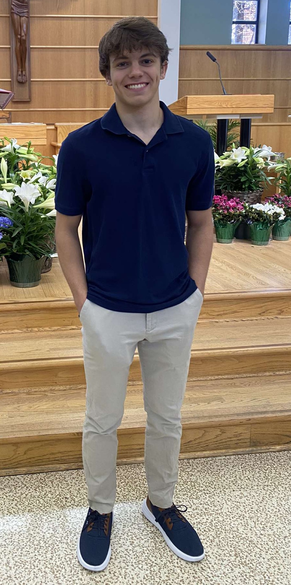

About Me
 Hi! My name is Kyle Nowak, and I am a rising junior as Michigan State University. I am currently majoring in Computer Science, and am applying for a minor in Game Design and Development this semester.
Some of my hobbies include playing video games (big suprise), soccer, and cards. I also swam competitively for most of my life, eventually becoming the captain of my high school's swim team and earning a place in the top 5 all-time records for the 100 yard breaststroke.
I started getting into game development back in about 2nd grade when I first found the site Roblox. I thought it was awesome that the games I was playing were made by other players just like me, which inspired me to try and figure out how to make my own.
Initially, I would just make games entirely out of "free models," Roblox's name for assets that were created by other developers and published to their site for open-source use. While this was great for the first couple of games I tried making, I eventually grew frustrated with the fact that I had no idea how my games were working, despite me trying my hardest to figure out what the scripts were doing without any prior knowledge.
In about 7th grade, I decided I was going to take learning how to code more seriously. I began by watching a YouTube series created by the then-popular developer peaspod on his channel PeasFactory. This series taught me the basics of programming, such as if statements, loops, functions and parameters, and eventually more complex concepts, such as variable scope and event-based coding. While these were all great lessons, arguably the most important lesson this series taught me was how to read APIs. Once I realized that I could figure out what the many classes and services Roblox provides could do without needing a YouTube video, I really began to understand the essence of (object-oriented) programming.
With my newfound knowledge, I thought I could easily create a game (since making a game is just coding, right?). Every day when I came home from school, I'd sit down and work on my many ideas, trying to create the next World of Warcraft, Call of Duty, or whatever AAA title I could definitely recreate on my own.
As you could imagine, none of these games came to fruition, largely due to their insane scope and my lack of knowledge about the game design process outside of the little scripting I had done. These experiences did, however, plant the seeds for my passion for game development, and I've loved coding games ever since.
Outside of coding games, science has always been a big part of my life. I've always enjoyed pondering abstract ideas, such as Einstein's Theory of Relativity and Black Holes, or how time doesn't make any physical sense despite its inevitable influence on our lives, and continue to love this sort of exploration of truth.